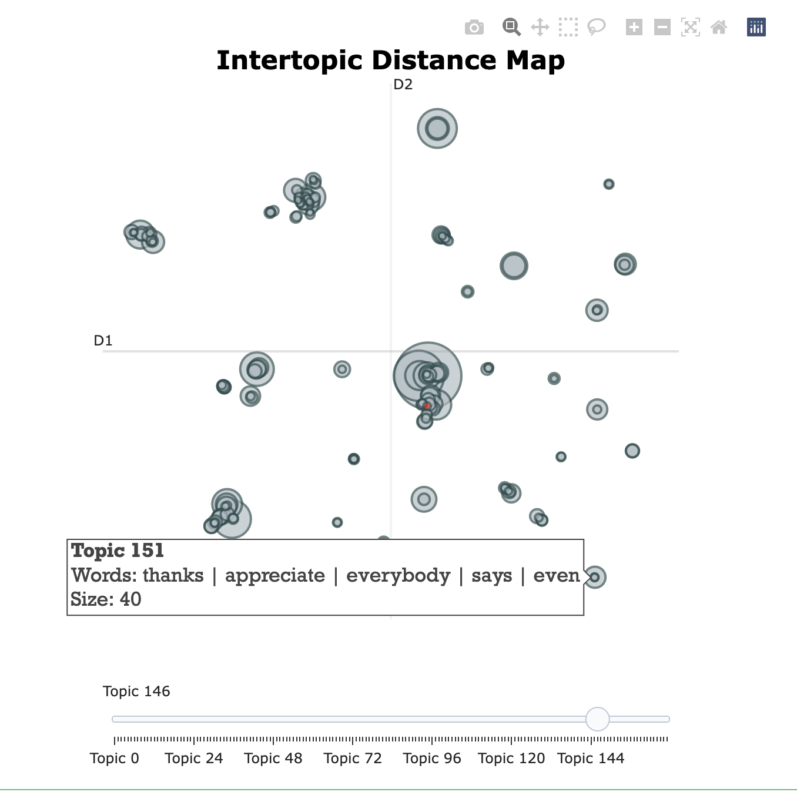
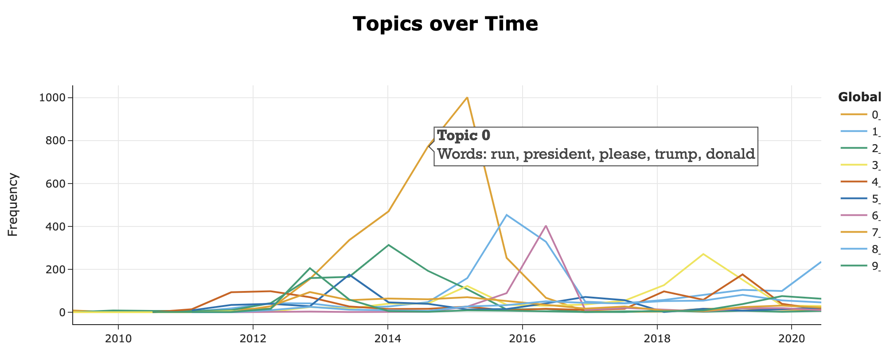

在本文中将使用 BERTopic 库，对美国前总统 Trump 推特数据集，构建动态主题模型 DTM(Dynamic Topic Modeling)，可视化文档数据集中不同主题随时间的演变(变迁)。文末有代码下载方式
安装
为保证代码可复现，保证你我电脑中 bertopic 版本一致，先查看大邓电脑的 bertopic 版本
import bertopic
#本文bertopic版本
bertopic.__version__
Run
'0.12.0'
#推荐指定版本安装；
#!pip3 install bertopic==0.12.0
#不指定版本安装
!pip3 install bertopic
导入数据
这里准备了twitter账号 @realDonalTrump 中 2021年的推特数据， 点击下载 数据及代码。
- 我们只分析原推特，不分析每条推特的回复。
- 因为要分析推特随时间的主题变化，需要准备 推特 及对应的 推文时间
import re
import pandas as pd
from datetime import datetime
# 导入数据
trump_df = pd.read_csv('trump_twitter_2021.csv')
trump_df.head()
Run
<div>
<style scoped>
.dataframe tbody tr th:only-of-type {
vertical-align: middle;
}
.dataframe tbody tr th {
vertical-align: top;
}
.dataframe thead th {
text-align: right;
}
</style>
<table border="1" class="dataframe">
<thead>
<tr style="text-align: right;">
<th></th>
<th>id</th>
<th>text</th>
<th>isRetweet</th>
<th>isDeleted</th>
<th>device</th>
<th>favorites</th>
<th>retweets</th>
<th>date</th>
<th>isFlagged</th>
</tr>
</thead>
<tbody>
<tr>
<th>0</th>
<td>98454970654916608</td>
<td>Republicans and Democrats have both created ou...</td>
<td>f</td>
<td>f</td>
<td>TweetDeck</td>
<td>49</td>
<td>255</td>
<td>2011-08-02 18:07:48</td>
<td>f</td>
</tr>
<tr>
<th>1</th>
<td>1234653427789070336</td>
<td>I was thrilled to be back in the Great city of...</td>
<td>f</td>
<td>f</td>
<td>Twitter for iPhone</td>
<td>73748</td>
<td>17404</td>
<td>2020-03-03 01:34:50</td>
<td>f</td>
</tr>
<tr>
<th>2</th>
<td>1218010753434820614</td>
<td>RT @CBS_Herridge: READ: Letter to surveillance...</td>
<td>t</td>
<td>f</td>
<td>Twitter for iPhone</td>
<td>0</td>
<td>7396</td>
<td>2020-01-17 03:22:47</td>
<td>f</td>
</tr>
<tr>
<th>3</th>
<td>1304875170860015617</td>
<td>The Unsolicited Mail In Ballot Scam is a major...</td>
<td>f</td>
<td>f</td>
<td>Twitter for iPhone</td>
<td>80527</td>
<td>23502</td>
<td>2020-09-12 20:10:58</td>
<td>f</td>
</tr>
<tr>
<th>4</th>
<td>1218159531554897920</td>
<td>RT @MZHemingway: Very friendly telling of even...</td>
<td>t</td>
<td>f</td>
<td>Twitter for iPhone</td>
<td>0</td>
<td>9081</td>
<td>2020-01-17 13:13:59</td>
<td>f</td>
</tr>
</tbody>
</table>
</div>
预处理
- 使用正则表达式 清除推文中的http链接
- 剔除@符
- 使用正则表达式 剔除 非英文字符
import re
#预处理函数clean_text
def clean_text(text):
text = re.sub("http\S+", "", text).lower()
text = " ".join([w for w in text.split() if w[0]!='@'])
text = re.sub("[^a-zA-Z]+", " ", text).lower()
return text
test_text = 'hello @Apple, https://apple.com 李John'
#验证函数有效性
clean_text(text=test_text)
Run
'hello john'
- 对text字段使用预处理函数 clean_text
- 只保留原推文
- 准备推特tweets和时间戳 timestamps
#清洗字段text
trump_df['text'] = trump_df['text'].apply(clean_text)
#只保留特朗普原推文(剔除特朗普的Retweet)
#推文内容不能为”“
trump_df = trump_df.loc[(trump_df['isRetweet'] == "f") & (trump_df['text'] != ""), :]
#准备tweets及对应的timestamps
tweets = trump_df['text'].to_list()
timestamps = trump_df['date'].to_list()
tweets[0]
Run
'republicans and democrats have both created our economic problems '
初始化BERTopic
在模型初始化阶段，使用所有推文数据， 会忽略时间维度。 该步骤会把所有时间段中出现的主题都提前训练识别出来。
from bertopic import BERTopic
#大邓这里，运行了不到1小时
#特朗普比较活跃，什么内容都会参与，所以这里设置一个话题数下限为35，话题数上限不设置
topic_model = BERTopic(min_topic_size=35, verbose=True)
topics, _ = topic_model.fit_transform(tweets)
Run
Downloading: 0%| | 0.00/1.18k [00:00<?, ?B/s]
Downloading: 0%| | 0.00/190 [00:00<?, ?B/s]
Downloading: 0%| | 0.00/10.6k [00:00<?, ?B/s]
Downloading: 0%| | 0.00/612 [00:00<?, ?B/s]
Downloading: 0%| | 0.00/116 [00:00<?, ?B/s]
Downloading: 0%| | 0.00/39.3k [00:00<?, ?B/s]
Downloading: 0%| | 0.00/349 [00:00<?, ?B/s]
Downloading: 0%| | 0.00/90.9M [00:00<?, ?B/s]
Downloading: 0%| | 0.00/53.0 [00:00<?, ?B/s]
Downloading: 0%| | 0.00/112 [00:00<?, ?B/s]
Downloading: 0%| | 0.00/466k [00:00<?, ?B/s]
Downloading: 0%| | 0.00/350 [00:00<?, ?B/s]
Downloading: 0%| | 0.00/13.2k [00:00<?, ?B/s]
Downloading: 0%| | 0.00/232k [00:00<?, ?B/s]
Batches: 0%| | 0/1418 [00:00<?, ?it/s]
2022-12-04 22:04:02,964 - BERTopic - Transformed documents to Embeddings
2022-12-04 22:05:13,606 - BERTopic - Reduced dimensionality
2022-12-04 22:05:17,814 - BERTopic - Clustered reduced embeddings
抽取出所有的话题
freq = topic_model.get_topic_info()
#话题总数
print(len(freq))
freq.head(10)
Run
169
<div>
<style scoped>
.dataframe tbody tr th:only-of-type {
vertical-align: middle;
}
.dataframe tbody tr th {
vertical-align: top;
}
.dataframe thead th {
text-align: right;
}
</style>
<table border="1" class="dataframe">
<thead>
<tr style="text-align: right;">
<th></th>
<th>Topic</th>
<th>Count</th>
<th>Name</th>
</tr>
</thead>
<tbody>
<tr>
<th>0</th>
<td>-1</td>
<td>15098</td>
<td>-1_the_to_is_of</td>
</tr>
<tr>
<th>1</th>
<td>0</td>
<td>3182</td>
<td>0_run_president_trump_donald</td>
</tr>
<tr>
<th>2</th>
<td>1</td>
<td>1821</td>
<td>1_crowd_carolina_join_thank</td>
</tr>
<tr>
<th>3</th>
<td>2</td>
<td>1084</td>
<td>2_golf_course_doral_scotland</td>
</tr>
<tr>
<th>4</th>
<td>3</td>
<td>1030</td>
<td>3_border_wall_immigration_mexico</td>
</tr>
<tr>
<th>5</th>
<td>4</td>
<td>811</td>
<td>4_china_trade_tariffs_chinese</td>
</tr>
<tr>
<th>6</th>
<td>5</td>
<td>642</td>
<td>5_obamacare_healthcare_repeal_website</td>
</tr>
<tr>
<th>7</th>
<td>6</td>
<td>638</td>
<td>6_hillary_clinton_crooked_she</td>
</tr>
<tr>
<th>8</th>
<td>7</td>
<td>607</td>
<td>7_amp_it_you_to</td>
</tr>
<tr>
<th>9</th>
<td>8</td>
<td>562</td>
<td>8_media_fake_news_failing</td>
</tr>
</tbody>
</table>
</div>
-1 意识是所有的离群点(异类)推文，应该被忽略掉。接下来让我们看一下 Topic-4 的特征词及其权重
#topic-4的特征词及权重
topic_model.get_topic(4)
Run
[('china', 0.05289416225000891),
('tariffs', 0.024471004754487165),
('trade', 0.02437576425026641),
('chinese', 0.013643270667358017),
('us', 0.011206804363719649),
('farmers', 0.01113584970813823),
('our', 0.010197907480148342),
('deal', 0.010014612658730073),
('we', 0.009043537683534882),
('countries', 0.00901653033214627)]
在二维空间中使用 Intertopic Distance Map 可视化所有主题。该图可以让我们继续创建 DTM 前，判断主题数设置的是否充分够用。
fig = topic_model.visualize_topics()
fig
Run

渲染的可视化文件太大，这里感兴趣的可以 点击查看动态效果图
构建DTM
在 构建动态主题模型 前， 不同时间段中出现的主题需要预先都训练好。
- docs 文档数据，对应于本文的 tweets
- timestamps 时间戳，对应于本文的 timestamps
- global_tuning 是否将某个主题在 时间t 的主题表示向量 与 其全局主题表示向量 进行平均
- evolution_tuning 是否将某个主题在 时间t 的主题表示向量 与 该主题在时间t-1 的主题表示向量 进行平均
- nr_bins 时间段内含有的时间戳(点)数量。在数千个不同的时间戳中提取主题在计算上是低效的, 可以合并 20 个时间戳为一个时间段
topics_over_time = topic_model.topics_over_time(docs=tweets,
timestamps=timestamps,
global_tuning=True,
evolution_tuning=True,
nr_bins=20)
topics_over_time
Run
<div>
<style scoped>
.dataframe tbody tr th:only-of-type {
vertical-align: middle;
}
.dataframe tbody tr th {
vertical-align: top;
}
.dataframe thead th {
text-align: right;
}
</style>
<table border="1" class="dataframe">
<thead>
<tr style="text-align: right;">
<th></th>
<th>Topic</th>
<th>Words</th>
<th>Frequency</th>
<th>Timestamp</th>
<th>Name</th>
</tr>
</thead>
<tbody>
<tr>
<th>0</th>
<td>-1</td>
<td>donald, keychain, champion, trump, contest</td>
<td>20</td>
<td>2009-04-30 12:30:07.596999936</td>
<td>-1_the_to_is_of</td>
</tr>
<tr>
<th>1</th>
<td>0</td>
<td>donald, execute, imagination, step, randal</td>
<td>9</td>
<td>2009-04-30 12:30:07.596999936</td>
<td>0_run_president_trump_donald</td>
</tr>
<tr>
<th>2</th>
<td>2</td>
<td>begun, schedule, ahead, international, scotland</td>
<td>1</td>
<td>2009-04-30 12:30:07.596999936</td>
<td>2_golf_course_doral_scotland</td>
</tr>
<tr>
<th>3</th>
<td>3</td>
<td>cling, wallflower, persona, walls, rather</td>
<td>1</td>
<td>2009-04-30 12:30:07.596999936</td>
<td>3_border_wall_immigration_mexico</td>
</tr>
<tr>
<th>4</th>
<td>10</td>
<td>independence, safe, here, enjoy, happy</td>
<td>1</td>
<td>2009-04-30 12:30:07.596999936</td>
<td>10_veterans_honor_heroes_our</td>
</tr>
<tr>
<th>...</th>
<td>...</td>
<td>...</td>
<td>...</td>
<td>...</td>
<td>...</td>
</tr>
<tr>
<th>1880</th>
<td>162</td>
<td>ratings, fredo, frank, bad, based</td>
<td>2</td>
<td>2020-06-09 07:29:57.849999872</td>
<td>162_ratings_machine_show_sided</td>
</tr>
<tr>
<th>1881</th>
<td>163</td>
<td>yes, no, way, absolutely,</td>
<td>2</td>
<td>2020-06-09 07:29:57.849999872</td>
<td>163_yes_no_absolutely_way</td>
</tr>
<tr>
<th>1882</th>
<td>164</td>
<td>twitter, trending, section, trends, conservative</td>
<td>13</td>
<td>2020-06-09 07:29:57.849999872</td>
<td>164_twitter_trending_conservative_sectio...</td>
</tr>
<tr>
<th>1883</th>
<td>165</td>
<td>york, eaten, hell, new, blasio</td>
<td>4</td>
<td>2020-06-09 07:29:57.849999872</td>
<td>165_york_ny_new_wonerful</td>
</tr>
<tr>
<th>1884</th>
<td>167</td>
<td>mixing, courthouse, mocked, notes, prosecuted</td>
<td>3</td>
<td>2020-06-09 07:29:57.849999872</td>
<td>167_jury_judge_guilty_foreperson</td>
</tr>
</tbody>
</table>
<p>1885 rows × 5 columns</p>
</div>
可视化DTM
#模型中一共有169个主题，这里显示前Top10的主题的演变
topic_model.visualize_topics_over_time(topics_over_time, top_n_topics=10)
Run
 渲染的可视化文件太大，这里感兴趣的可以 点击查看动态效果图
获取本文代码
点击获取 数据及代码